Full Vehicle with Multibody Suspension
This example uses the Simscape Vehicle Templates to model and simulate vehicles using Simscape products. This includes one-axle, two-axle, multi-axle and trailers. It includes a highly configurable vehicle model that is integrated with controllers and other content from other MathWorks products. A modular library of components gives users a great starting point for creating custom vehicle models.
Contents
- Model
- Car Subsystem
- Chassis Subsystem
- Suspension, Front Axle Subsystem
- Suspension, Front Axle, Linkage Subsystem
- Suspension, Front Axle, Linkage L Subsystem
- Suspension, Double Wishbone Subsystem
- Steer Subsystem
- Steer Rack Subsystem
- Brakes Subsystem
- Brakes, Pedal Subsystem
- Brakes, ABS 4 Channel Subsystem
- Brakes, ABS 4 Channel Valves Subsystem
- Tire L1 Subsystem
- Powertrain Subsystem
- Driveline, Two Powered Shafts Subsystem
- Power, Electric Two Motors Subsystem
- Power, Cooling System Two Motors Subsystem
- Simulation Results from Simscape Logging
- Full Throttle, Braking
- Front Steering, Steering Sequence
- Double-Lane Change
Model


Car Subsystem
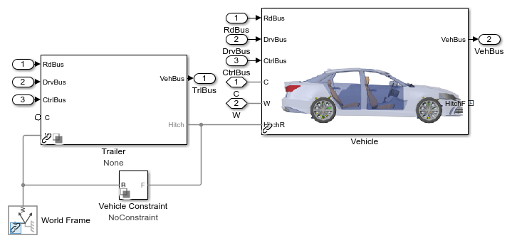Chassis Subsystem
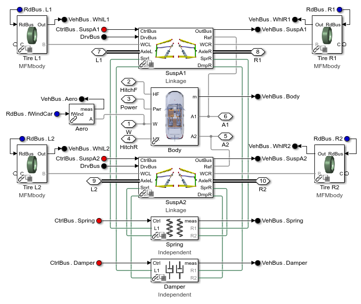Suspension, Front Axle Subsystem
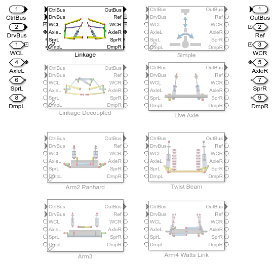Suspension, Front Axle, Linkage Subsystem
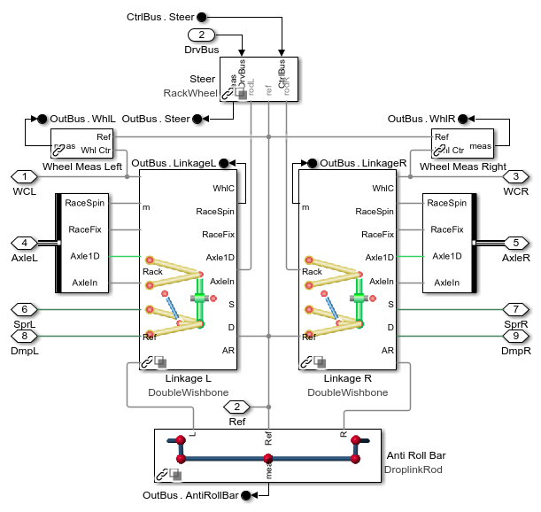Suspension, Front Axle, Linkage L Subsystem
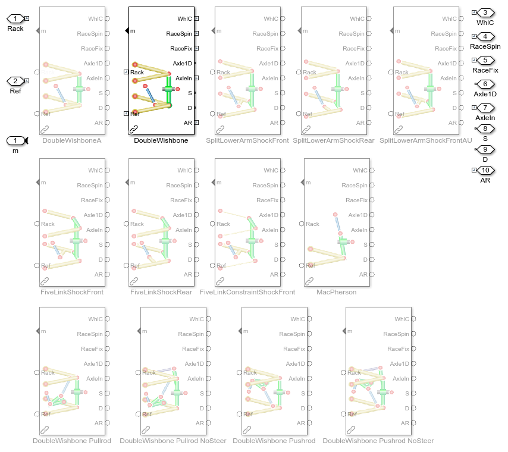Suspension, Double Wishbone Subsystem
Steer Subsystem
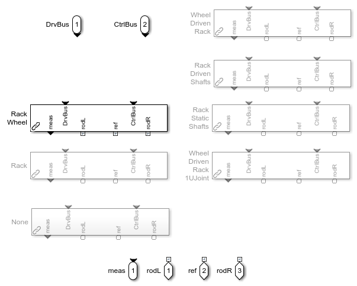Steer Rack Subsystem
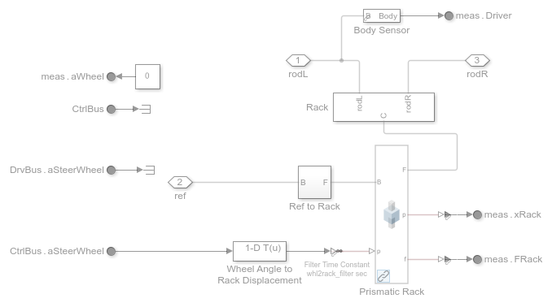Brakes Subsystem
Brakes, Pedal Subsystem
Brakes, ABS 4 Channel Subsystem
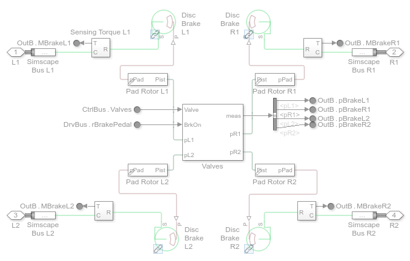Brakes, ABS 4 Channel Valves Subsystem
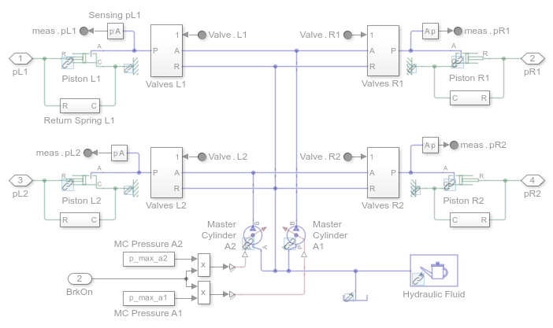Tire L1 Subsystem
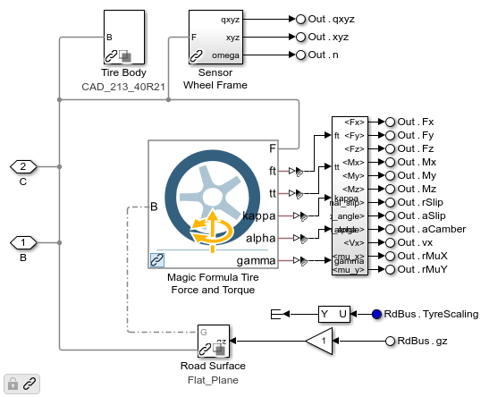Powertrain Subsystem
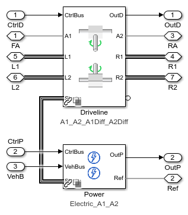Driveline, Two Powered Shafts Subsystem
Power, Electric Two Motors Subsystem
Power, Cooling System Two Motors Subsystem
Simulation Results from Simscape Logging
Plot results of vehicle test: position, x and y velocity components, vehicle speed, and steering input.
Loading default data for 2-axle vehicle and 1-axle trailer. Turning off MFEval warnings... Solver:CoeffChecks:Eyk -- OFF Solver:Limits:Exceeded -- OFF Solver:CoeffChecks:Et -- OFF Solver:CoeffChecks:Exa -- OFF Disabling trailer by default.